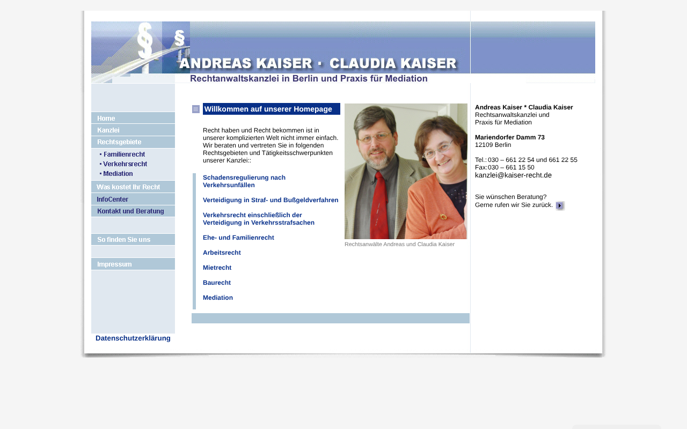
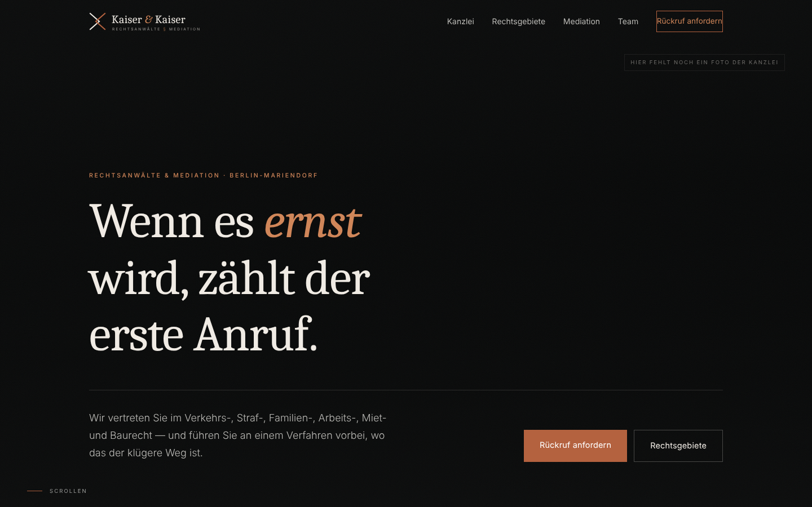
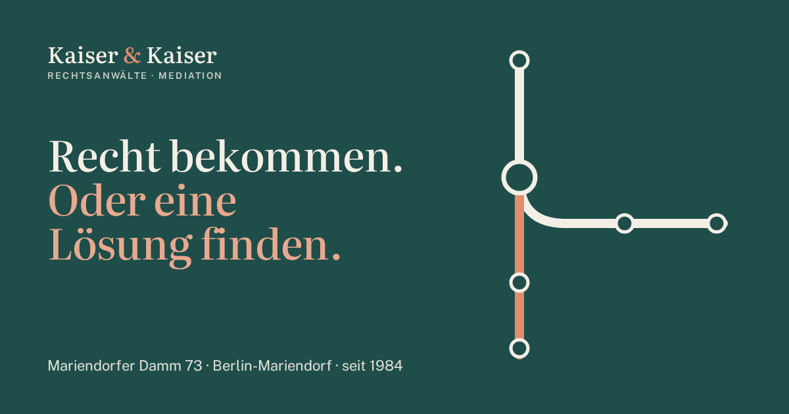
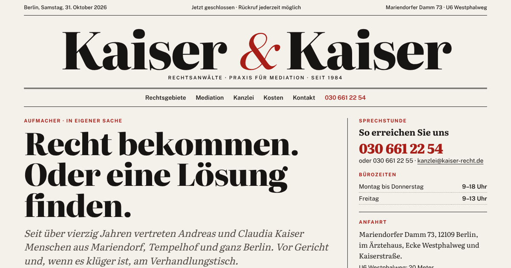
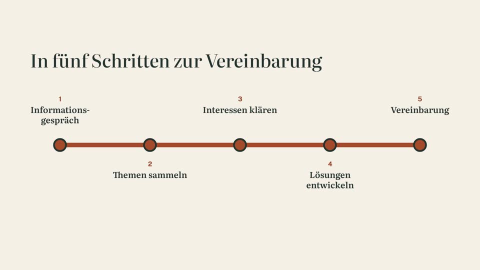

Heute online
Die bisherige Website
kaiser-recht.de, wie sie im Moment zu sehen ist.
Öffnen →
August 2026
Der erste Entwurf
Die Ansichtsfassung vom 19. August, dunkel und reduziert.
Öffnen →
Oktober 2026 · neu
Die neue Website
Zwei Wege aus einem Konflikt: vor Gericht oder in der Mediation. Mit Seiten für jedes Rechtsgebiet, Rückruf-Formular und Erklärvideo.
Neue Website öffnen →
Oktober 2026 · Alternative
Im Stil einer Tageszeitung
Die gleichen Inhalte, anders erzählt: die Startseite als Titelseite, die Rechtsgebiete als Ressorts, die Mediation als Hintergrundstück. Zum Vergleich gibt es hier nur die Startseite.
Alternative öffnen →
Erklärvideo Mediation60 Sekunden, ohne Ton ? Was wir noch von Ihnen brauchenOffene Fragen und Angaben zum PrüfenZurück zu dieser ÜbersichtUnten links auf jeder Seite: „Zur Übersicht“.
So sieht es auf dem Handy ausTaste F12 drücken und oben das Handy-Symbol anklicken.
Ein EntwurfTexte und Angaben sind noch nicht freigegeben. Fotos folgen. Das Formular sendet hier nichts.